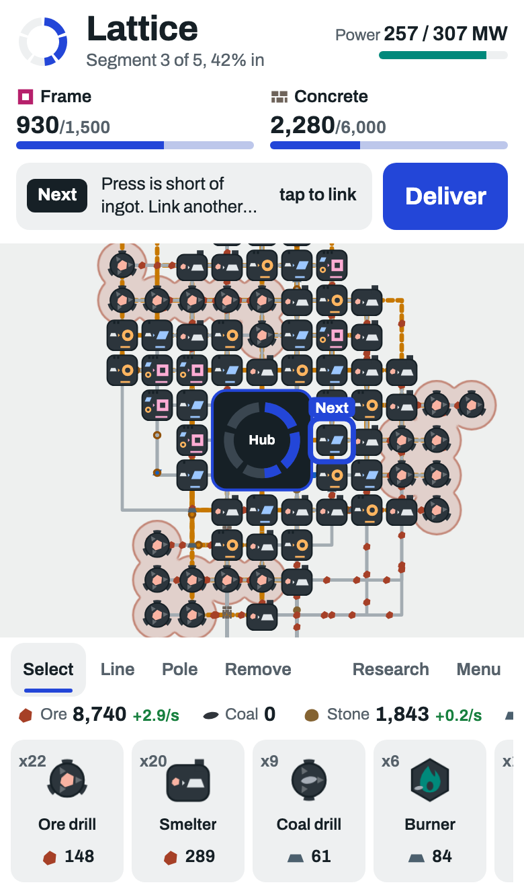
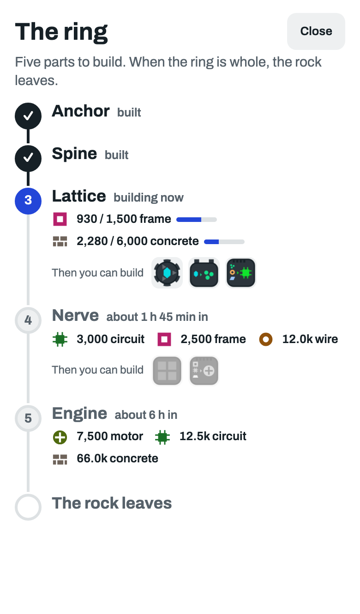
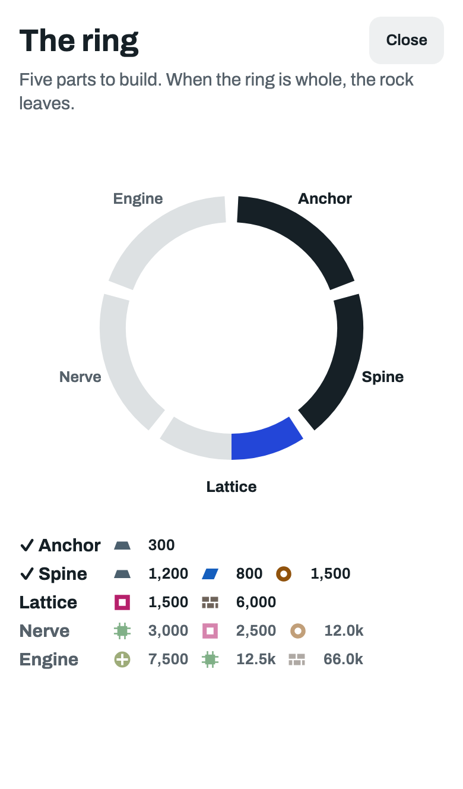

UX decision 1 of 9: the whole game.
Tap the ring at the top left and the whole game opens. Shown here part way through: two parts built, the third under way.
As now. Only the small ring and the part you are on. What comes next has no name.

A road, top to bottom. Each stop shows the parts it needs and the machines it lets you build. Done is ticked.

The ring drawn big, filling as you go, with what each part needs below. No machines.
